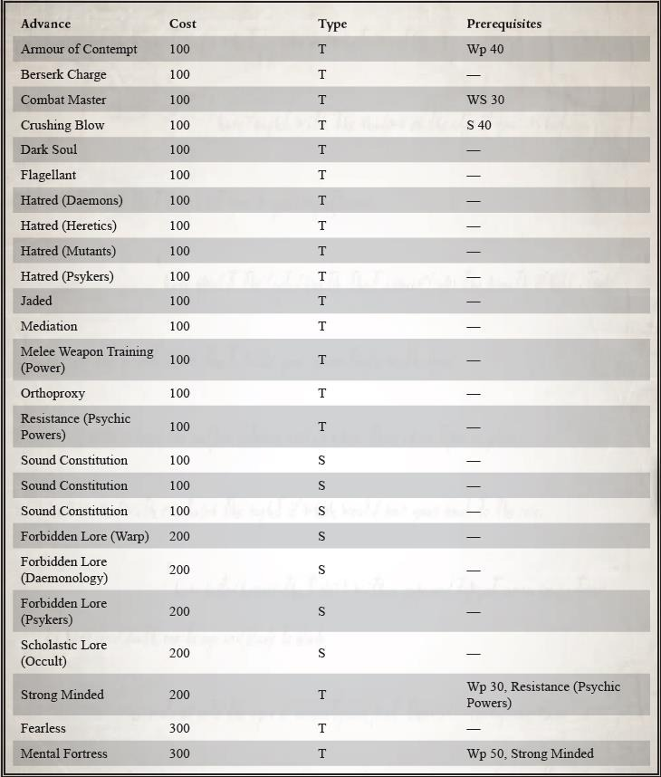
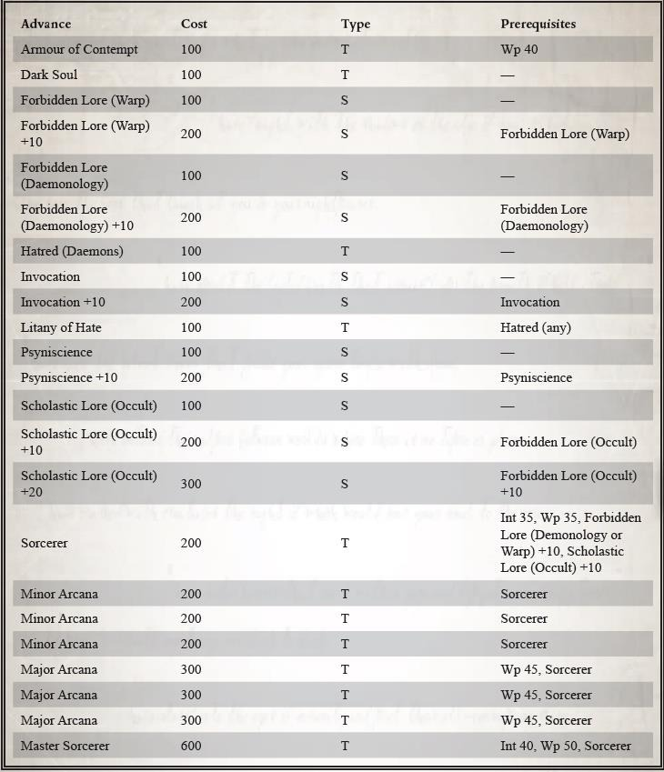
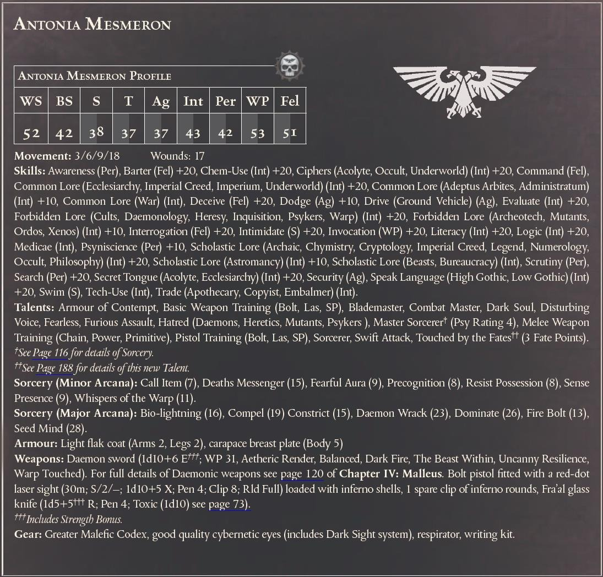

禁忌知识（恶魔学）/200/s/-
禁忌知识（灵能者）/200/s/-
学术知识（神秘学）/200/s/-
顽强意志/200/t/Wp30，抵抗（灵能）
无所畏惧/300/t/-
意志壁垒/300/t/Wp50，顽强意志
60 / 105
放逐牧师
原文链接：https://www.bilibili.com/read/cv14586035/
我所蒙受的恩典今已尽失。如今我只是个骸骨教堂的牧师，而信众俱是灰烬与咧嘴大笑的骷髅。我不再是人类：我只是个由暗淡的知识，被挥霍的纯洁与悔恨构成的东西。
-祭司安德索，服务于安东尼娜·梅斯莫隆*的一名侍僧
放逐牧师是被激进派审判官吸纳进侍从队伍的虔诚国教牧师，他们献身于学习黑暗知识和被禁止的巫术技艺。巫术的知识与运用是亵渎神明的技艺，它会吞噬那些习得并使用这等黑暗技艺的人。然而，巫术和恶魔学识的力量是对抗帝国面对的各种威胁的有力武器。因此，尽管知道这是在诅咒自己，那些愿意牺牲灵魂以捍卫人类的人仍可能使用它们。
即使在审判庭激进派的队伍中，放逐牧师也是罕见的；虽然也有例外，但他们几乎只出现于尊奉赞斯派**（Xanthite）或献祭派（Oblationist）信条的队伍中，而且往往是出于完全不同的原因。
献祭派（The Oblationists）：只有在为献祭派信条服务的人中，那些牺牲自己投身诅咒的纯洁而公正的人才能这样做；其他所有这样做的人都是卑鄙的异端，只配被火烧死。所以献祭派相信，放逐牧师是这种狂热信仰的终极表现。这是一条献祭派成员铭记于心的准则，所以当他们需要一个巫师为他们服务时，他们会从最纯洁的来源训练出巫师：最好也最虔诚的国教牧师们。这些牧师是为献祭派成员长期服务且受其信任的侍僧，他们接受并拥抱了他们的主人或女主人那自我毁灭式的信条，因此被给予了成为对抗帝国之敌的武器这一责任。
赞斯派（The Xanthites）：赞斯派的目的是掌握与支配亚空间和混沌的力量，并让它为人类服务。这是一项致命的追求，需要意志坚定、目光长远的男男女女去实现。为了达成这个目的，赞斯派找出并吸引那些信仰遇到严峻考验亦或自身信条偏离了国教狭隘信条的牧师为他们服务。更好的做法是慢慢地影响并塑造他们，诱导他们树立自己的目标并自行拥抱黑暗而有远见的赞斯派理念。这些放逐牧师在对禁忌知识的学习中成长起来，他们以亲信侍僧、驱魔人、恶魔束缚者的身份为赞斯派的事业服务。而他们对神皇的信仰，尽管狂热不减以前，却已经改变了-像是透过一面模糊的镜子一样。
同时踏在天堂与地狱所需要的人格力量确实是非常罕见的东西，而放逐牧师的授职仪式是一个学习与黑暗转化的过程。在仪式的影响下，曾经纯洁的牧师学习和实践亚空间技艺的邪恶技能。通过这样做，一个有着无垢信仰的牧师就转化为一个除了牺牲与服务一无所有的空壳。从这一刻起，放逐牧师将成为他的审判官最信任的侍僧之一，并可能在一段时间内被提升到审判官的等级，以使黑暗技艺延续到另一世代的审判官。
成为一名放逐牧师
成为一名放逐牧师对一位牧师侍僧来说是一项影响深刻的改变；在他的行事方式上，他超出了原本的底线并无可争辩地向激进主义转变。进入这个进阶职业也代表了献祭派或赞斯派审
61 / 105
判官（举例来说）对助手的信任程度，这是主人和仆人都同意且有意识的选择。考虑到这一点，玩家在为他的牧师角色选择这个职业之前应该与他的 GM 密切协商。
当一个牧师走上放逐牧师的道路时，他将经历一段净化、祈祷与斋戒的时期，同时训练邪恶的技艺。在这段时间结束后，牧师将失去他此前可能获得的任何以纯洁信仰（Pure Faith）为基础的天赋（见于审判官手册第 50 页）。牧师的意志力加值也将获得 1d10 减去他的堕落点的提升。
需要职业：牧师
可选等级：5 级或更高（3000xp）
| 提升 | 花费 | 种类 | 前置条件 |
|---|---|---|---|
| 傲慢护甲 | 100 | t | Wp40 |
| 黑暗灵魂 | 100 | t | - |
| 禁忌知识（亚空间） | 100 | s | - |
| 禁忌知识（亚空间）+10 | 200 | s | 禁忌知识（亚空间） |
| 禁忌知识（恶魔学） | 100 | s | - |
| 禁忌知识（恶魔学）+10 | 200 | s | 禁忌知识（恶魔学） |
| 宿敌（恶魔） | 100 | t | - |
| 专注 | 100 | s | - |
| 专注+10 | 200 | s | 专注 |
| 憎恨连祷 | 100 | t | 宿敌（任意） |
| 灵能感应 | 100 | s | - |
| 灵能感应+10 | 200 | s | 灵能感应 |
| 学术知识（神秘学） | 100 | s | - |
| 学术知识（神秘学）+10 | 200 | s | 学术知识（神秘学） |
| 学术知识（神秘学）+20 | 300 | s | 学术知识（神秘学）+10 |
62 / 105

| 提升 | 花费 | 种类 | 前置条件 |
|---|---|---|---|
| 巫师 | 200 | t | Int35,Wp35, 禁忌知识（恶魔学或亚空间）+10，学术知识（神秘学）+10 |
| 次级奥术 | 200 | t | 巫师 |
| 次级奥术 | 200 | t | 巫师 |
| 次级奥术 | 200 | t | 巫师 |
| 高级奥术 | 300 | t | Wp45,巫师 |
| 高级奥术 | 300 | t | Wp45,巫师 |
| 高级奥术 | 300 | t | Wp45,巫师 |
| 巫术大师 | 600 | t | Int40，Wp50，巫师 |
63 / 105
审判官安东尼娅·梅斯莫隆
安东尼娅·梅斯莫隆（Antonia Mesmeron）是神秘的激进派“献祭派”的追随者。她认为，亚空间之力、异形的武器和不洁的装置会导致彻底腐化，任何与它们为伍之徒都必须面临终极制裁。然而，对于献祭派来说，只有通过敌人的武器才能打败敌人，因此那些灵魂纯洁的人必须接受诅咒，为了帝国的未来牺牲自己。
很久以前，她那不知名的主人就将这一教义传授给了梅斯莫隆，而在她漫游星际的这些年里，她对这一真理的信念也在不断加深，她一直在寻找那些被亚空间的诱惑或异形的低语所迷惑的弱者和误入歧途之人。她的做法就像一个正义的刽子手，一旦发现异端，便将其连根拔起，毫无悔意，也不分清白。她通常会挥舞着难以言喻的恐怖武器和巫术力量，亲自铲除异端的根源，并煽动一场肃清风暴，消除任何残留的腐化可能性。然后，就像开始时一样迅速，风暴过去，梅斯莫隆也消失了。
为安东尼娅·梅斯莫隆服务
梅斯莫隆在暗处行事，为她服务的人通常不知道他们主人的身份，大多数人也不知道他们是审判庭的侍僧。只要她认为有必要，她可以毫不犹豫地牺牲他们的生命，甚至更惨。事实上，在神圣审判庭，大多数听说过梅斯莫隆名字的人都认为她早已失踪，甚至在她曾经公开服务过的圣锤修会，人们也认为她已经死了：尽管有些人无疑知道真相。这位游荡的恶魔猎手雇佣的许多特工都在帝国边缘活动，他们是自由渗透者、雇佣兵和刺客。
梅斯莫隆与国教教义中的极端教派和狂热义警组织有许多联系。很少有人真正知道他们为谁服务，他们充当梅斯莫隆的亲信特工，组织她那些不知情的棋子和雇佣兵开展活动。梅斯莫隆有充分的理由进行这种极端的保密：她在卡利西斯的存在和活动必须保持秘密，因为她已经堕落到了的激进主义的深度，如果被更广泛的审判庭知晓，很可能会引发全星区范围内的大搜捕。
秘密议程和隐藏的真相
尽管梅斯莫隆和她信任的侍僧们不遗余力地隐藏她的活动和存在，但神圣审判庭还是无法忽视一连串死去的邪教徒、被谋杀的贵族家族和被摧毁的组织。在卡利西斯境内活动的其他审判官也开始怀疑有什么东西或什么人在作祟。将几起血案联系在一起，他们得出结论，这些活动的背后不仅仅是一个谋杀邪教或自由人士。
64 / 105

（原文件空白页）
65 / 105
费农派
“在鲜血中奉献，在悲痛中祝福，在钢铁中束缚，在泪水中沐浴，在灵魂中喂养！受祝福的痛苦引擎，我与你与你誓绝：苏醒吧！”
- 阿尼玛恶魔机械的咒语
这个邪恶的赞斯派分裂势力，甚至受到他们激进派同僚的唾弃，长期以来一直被恶魔审判庭宣布为被绝罚的异端叛徒。虽然他们曾经被认为在最近几年里已经彻底摧毁，但最近，这一极其异端的费农教义再次在卡利西斯星区抬头，以危险的新形态出现。不同于一些其存在至少在某种程度上得到了神圣审判庭同道们默许的激进派，费农派则被宣布为明确的人类之敌。即使对审判官来说，窝藏他们中的一员也是不可饶恕的死刑判决。由于他们匪夷所思的亵渎行为和对帝国公民无原则的冷漠态度，这个叛变的教派被驱逐并遭到迫害，他们被指控违背了帝国早期制定的戒律，背弃了神皇的神性。尽管神圣审判庭和机械修会都在对抗他们，但这一派别仍能存活下来，这证明了他们的阴险本质以及其核心的黑暗力量。究竟是什么力量或情报最初创立了费农派，以及是什么现在仍在指导着他们的行动，就连审判庭的高层议会也不得而知。
该派别在后来成为卡利西斯星区的最边缘建立的第一个权力基地被残酷摧毁，他们的队伍被从审判庭和各政府部门中清除，血流成河。然而，他们的毒瘤信条并没有消亡。费农派沉睡已久的邪恶势力再次袭来，被卷入这个已经被麻烦和阴谋困扰的星区，而卡利西斯星区在对抗他们微妙而黑暗的力量上毫无准备。
自从费农派出现的传言开始流传以来，无论是在审判庭内部，还是在卡利西斯星区其他强大的技术异端和叛变组织中，他们都慢慢地获得了新的皈依者。费农派现在的身份是纯粹的阴谋家、阴险的耳语者和杀人的暗影。他们将自己的存在和行动隐藏在秘密和欺骗的外衣下，迅速以审判庭忠实成员的身份掩盖自己的真实面目，或者干脆不留下任何目击者。
审判庭中的激进派很少有比他们更受追捕、更受憎恶、更致命的了。
自从两千多年前他们被发送驱逐令并遭到清洗后，人们认为费农主义在卡利西斯和伊克萨尼德星区的影响反而越来越大，他们的特工一直在慢慢地传播着他们的腐朽影响，并寻找黑暗传说和禁忌文物来进一步增强他们的力量。有一点可以肯定，如果费农派正在慢慢重生，那么对于已经被阴谋和威胁所困扰的卡利西斯密会来说，这将是一件非常重要的事情。历史表明，费农派所到之处，地狱和死亡如影随形。
毁灭的技艺
费农派不仅仅是一群阴谋家和逃犯，它也是一种拥有意识形态的信仰，其追随者对他们事业的基本正确性充满了狂热的信仰。审判官（不论是激进还是其他）通常都是有着坚定信仰的男女，而费农派的信仰集中在通过技术掌握亚空间上，其原因不仅仅是这些技术可能赋予的力量所能代表的，而更是为了全人类未来的命运。对于那些接受它的人来说，费农派之路提供了人类能够在全面袭击帝国的恐怖和不断增加的威胁中生存的唯一可行途径。对于他们来说，过去的武器和工具以及只会让人们陷入迷信和恐惧的浮夸意识形态已经过时且无用。需要一种真正有远见的方法来确保未来的存续掌握在人类手中。
66 / 105
费农派哲学的核心是通过长期被帝国禁止的奥秘技术过程来驾驭亚空间和恶魔。这一学说，作为对于赞斯派伦理的延伸，费农派更注重科技的手段而非完全的神秘学方法来实现自己的目标（这正是赞斯派的一贯作风），并迅速变异为更糟糕的东西，吸纳了最极端的独占派教义。费农派迅速抛弃了对神皇和混沌崇拜的信仰，转而坚信人类的命运在于人与机器的融合，通过无穷无尽、天马行空的亚空间能量结合在一起并使之永生。如果说费农派有什么神的话，那就是野心，因为他们不屈膝膜拜，而是渴望被膜拜，渴望将宇宙压在脚下，成为一切存在或将要存在的主宰。
费农派看到帝国在他们的领导下重生，看到人类在他们手中像陶轮上的泥土一样被塑造，成为机器、肉体、物质和精神的终极主宰。费农派知道，要想实现这一目标，就必须将帝国的政治体制斩首并取而代之，必须彻底摧毁崇拜毁灭之力的妄想奴隶，为他们的新秩序让路。
由于认识到自己人数少、敌人多，非法派别的首要目标是获取和开发先进的破坏机器，以实现自己的目的。这种追求使他们将最黑暗的技术异端和叛徒聚集在他们的隐秘力量中，不受帝国法令、机械修会的古老传统或道德和理智的约束，直接追求知识和恶意发明。在这样做的过程中，他们迅速为自己制造出了威力惊人的工具和武器，甚至对他们自己也造成了极大的危险。费农派在使用这些武器时表现出了审判庭成员应有的精巧和狡诈，使它们变得更加危险。
费农派的武器
费农派的力量最能体现在他们高效的武器装备和高超的使用技巧上。为此，他们的组织倾向于囤积武器装备，成员们也以高度的个人义体强化能力而自豪，既有世俗通用的，也有更深奥的。因此，费农派的审判官和侍僧很少在毫无准备的情况下上阵，他们往往会把最可怕的装备、注入恶魔的电子系统和亚空间强化的武器隐藏起来，直到需要时才拿出来，这让他们在面对敌人时获得了意想不到的可怕优势。
虽然费农派也曾使用过古泰拉和异形的设计，但他们最痴迷的还是将科技与他们所掌握的神秘学力量相融合，从而为科技注入亚空间的力量：他们认为这种发展最终要优于其他所有系统。尽管危险难以预测，但这种常常令人毛骨悚然的装置被机械修会称为 "弊病技术"，往往被证明是极其有效且难以对付的。这种技术的范围很广，从释放突变混沌能量的爆弹弹药，到能够在大范围内扰乱灵能能力和消灭灵能者的以太信号发生器，不一而足。“技术弊病追猎者”是他们的最新研发成果之一，正在迅速成为他们的标志性产品。它是一种暗杀引擎，是一种人类杀手或拜死教成员，被植入了被禁止的仿生系统，并刻有神秘力量的符文，将人类对致命技能的掌握、不屈不挠的金属、恶魔的愤怒结合在了一起。
帝皇恩典之外
与这里提到的许多其他激进派系不同，费农派已被审判庭本身的领主们判处为逐出修会的叛徒。这个事实使费农派不仅仅是可疑的激进分子，他们的个人行为可能导致他们被神圣审判庭摧毁；它们将他们毫不保留地置于帝国敌人的最前列，不受审判官或其仆从通常拥有的权利和权威的任何保护。简而言之，对于费农派来说，没有“宽大处理”的权利，没有权利涉
67 / 105
足其他人所禁止的领域，也没有权利在大会前接受审判。如果任何神圣审判庭的成员，从大审判官到最卑微的侍僧，被指控为费农派，或者被指控为庇护或协助他们 - 无论是否不情愿，他们只能期望由其他审判官亲手处死。成为费农派的一员，甚至是为其服务的一员（无论他们的地位或联系如何），实际上就是接受了一种宣而未判的死刑。他们必须准备不择手段，不惜任何暴力或背叛行为，以保守自己的秘密，并在这样做的过程中生存下来。
同样，如果其他人在进行更广泛的调查过程中与费农派成员对质或揭露他们的阴谋，他们必须准备面对一个极具机智且充满权力的敌人，他们将不惜任何代价来保卫自己，永远不会屈服于神圣审判庭的审判。对他们而言已经没有什么可再失去的了，因此费农派乐于采取最黑暗的手段，以确保他们的逃脱或执行他们的任务，不管有多少人死于此过程。
秘密历史
费农首星的灭亡
“费农派分裂”可以追溯到最近的一个特定时空点：367.M39，安茹远征最惨淡时期发生的范德维肯三星系统叛乱。星团坐落在一片荒凉的空间中，位于已消亡的马达拉戈拉星区的旧领地边缘，沿着伊克萨尼德的旋卫边缘和数年血战后才被认定为的卡利西斯星区边缘。
以孤立的巢都世界费农首星为中心的三个星系饱受海盗活动和异形奴贩的袭击之苦，更糟糕的是，该地区经常被亚空间风暴切断援助。而到了在安茹远征时期，该地区的情况更加恶化，帝国为了支援安茹的战争而切断了对该地区仅有的一点保护。
在安茹远征的最低潮期，费农首星的总督在愤怒中宣布三星系统脱离帝国。他认为，当局对正在进行的征服卡利克斯扩张区（卡利西斯星区的前身）的血腥行动的关注会保护他们免遭迅速的报复。叛徒们借助新海盗盟友的船只，很快就粉碎了临近势力的抵抗，在一场血腥的狂欢中，总督推倒了国教的圣像，在原地竖起了混沌的邪恶偶像。然而，费农首星的叛徒总督严重误判了帝国的反应。
一支由臭名昭著的赞斯派审判官军阀科布拉斯·阿奎雷（Kobras Aquairre）指挥的审判庭特遣部队已经走在增援举步维艰的远征军路上了。阿奎雷带领着自己的私人舰队以及一艘墓穴守卫阿斯塔特战团的打击巡洋舰，迅速调兵遣将，以极端的偏执平息了叛乱。在击毁了掠袭者舰队，瘫痪了行星防御后，大审判官对费农主星的判决同样严厉无情，他毫不迟疑地部署了噬生者病毒炸弹。一颗拥有 140 亿灵魂的巢都世界被屠杀殆尽，以惩罚他们的傲慢和亵渎，直到最后一个生物死亡。事后，阿奎雷从他的私人幕僚和随从中调派了一支由数名审判官组成的部队，并从他的部队中抽调了一支机械修会分遣队前往这个已经死亡的星球，以便从残骸中找出一些线索。他对远征军进攻时面对的被恶魔污染的战争机器特别感兴趣。科布拉斯·阿奎雷很快就加入了卡利克斯扩张区的战争，他一如既往地渴望着新的征服和新的恐怖。在他的命令下，费农首星被划归为神圣审判庭的领地。在远征军再次集结力量进入哈泽罗斯（Hazeroth）和阿德兰提斯（Adrantis）的恐怖阶段后，这颗没有生命，与世隔绝的星球很快就开始被用来存放缴获的武器和囚犯，供被吸引到遥远的死亡世界的赞斯派研究。
科布拉斯·阿奎雷
作为卡利西斯神圣审判庭历史上最令人生畏、最具争议的人物之一，科布拉斯·阿奎雷几乎
68 / 105
是独一无二的，他同时拥有圣锤修会大审判官和行商浪人的双重身份，后者的血统可以追溯到帝国建立之初。近五个世纪以来，他乘着自己的旗舰图勒欧米茄号，一艘帝国成立前的遗物，带领着机械教探索者远征队，在朦胧星域的边际进行着净化远征。阿奎雷在朦胧星域高等密会的特别批准下，追捕这些叛徒和叛国者，这些人认为逃离了帝国的边界就等于逃脱了帝国的愤怒。在卡利西斯远征的后期，他与哈洛克（Haarlock）和马杰苏斯（Majessus）的行商浪人阵营为争夺战利品展开了激烈的血战。卡利西斯星区区建立后，他以该区为基地，进一步远征科罗努斯扩张据。据一些飘忽不定且疯狂的报道，他的舰队在与未知异形部队的战斗中失利，因为他在 011.M40 冒险深入光晕星边缘被称为赫卡顿裂隙的一片荒芜的空域。
他的最终命运仍然不得而知，但围绕着他的名字仍然有许多黑暗的传说。
费农派分裂
在费农首星成为审判庭基地后的短短几十年间，远征军和附近伊克萨尼德星区的高级审判官们开始接到令人不安的报告，称黑暗和异端已经占据了这个死亡世界。帝国政府和审判官们把这个世界当成了中转站，在那里上报了关于不虔诚和奇怪教义的令人不安的报告，而当时新成立的卡利西斯密会特工的秘密调查则表明，一些自称是 "费农派 "的审判官以这个世界为基地，开始在附近的星区旅行，并慢慢获得了信众的皈依。卡利西斯密会经过慎重考虑，选择了一名众所周知的 "叛徒"--审判官菲比斯（他是一名狂热的赞斯派，过去的所作所为曾让他受到官方的谴责）--打入这个日益壮大的派别，揭开真相。菲比斯和他的侍僧们进行了长达三年多的阴谋活动，他们往返于费农首星和新成立的卡利西斯星区仍然动荡不安的角落，而费农派的特工就在那里工作。在很长一段时间里，菲比斯被认为失踪并被推定死亡。
然而，在地狱猎犬的追杀之下，菲比斯意外地回到了辛提拉上新建的三角宫，他的肉体被烧得只剩骨头，只能靠自己扭曲的天才成果维持生命。他在会议上的证词揭露了费农派的罪行和其异端的可怕程度和严重性：其中最主要的就是否认帝皇是神圣的，追求被亚空间污染的科学和科技黑暗时代的恐怖。菲比斯还披露了费农派已经渗透并接管了几个新生的混沌邪教、技术异端阴谋团和在新星区边缘建立的叛变战帮，以达到他们的黑暗目的。费农派一直是众多海盗袭击和突袭机械修会设施的幕后黑手，目的是满足他们对燃料、弹药和其他重要物资的需求。菲比斯还解释说，费农派特工已经收买了该星区的几个新兴政府，并利用光晕星边缘正在进行的治安战来进行亵渎神明的实验。在那里，他们直接对人类帝国的殖民者秘密测试了腐化武器。更糟糕的是，他们还在隐蔽的中间人背后武装了混沌大敌的部队，以检验他们的设计是否有效。
作为回应，费农派和任何帮助他们的人，无论其身份和地位如何，都在 427.M39 年被特别召开的卡利西斯密会大议会宣布为叛徒并逐出修会。这立即引发了卡利西斯密会和伊克萨尼德密会内部的分裂和公开战争。很快，当地审判庭内部进行了血腥无情的大清洗，神圣泰拉审判庭甚至就此批准了一项支持性的《灭绝令宪章》，其法令至今仍然有效。
至于费农首星，恶魔审判庭内部的一些人认为，如此之多的人如此迅速地堕落为亚空间的奴仆绝非偶然。他们相信，那里存在着某种黑暗的力量，但究竟是一直如此，还是有什么东西被带到了那里，像病毒一样致命地传播着它的影响，仍然不得而知。无论如何，火星机械教都很高兴地答应了卡利西斯的请求。在铸造将军的命令下，他们调集了城市规模的虚空舰，将一颗卫星从其自然轨道上撕裂下来，击中了费农首星，将这颗行星砸成了碎片。
69 / 105